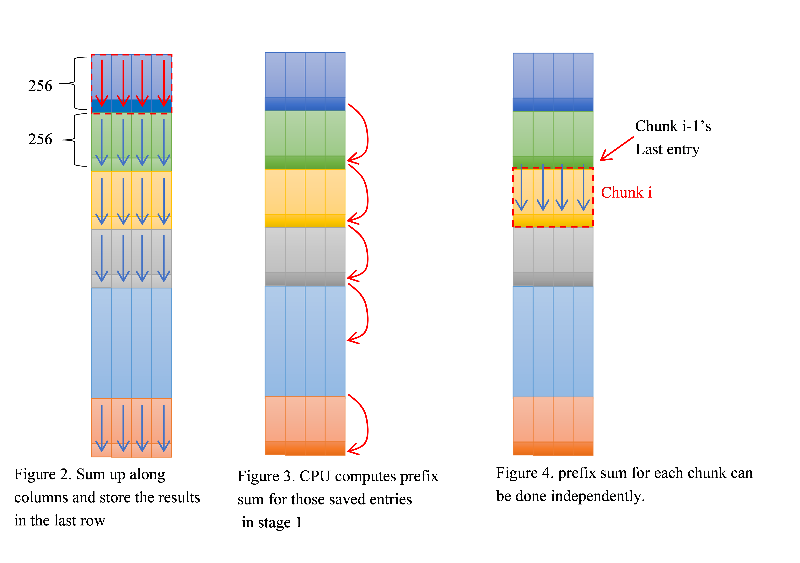

Tutorial 14. Kernel Example - PrefixSum¶
Prefix sum is a fundamental building block in parallel programming. The prefix sum kernel takes (2^N)*TUPLE_SZ table as input. The prefix sum of a sequence of (2^N)*TUPLE_SZ values is a new sequence of (2^N)*TUPLE_SZ values where the value at position (i,j) is the sum of all the values in the input sequence of column j up to position i. The code is shown below.
for (int i = 1; i < NUM_ENTRIES; i++)
for (int j = 0; j < TUPLE_SZ; j++)
Table[i][j] += Table[i-1][j];

The algorithm has a loop-carried dependency which prevents parallelizing the loops. Each i iteration can only be executed after the previous iteration has finished.
To break the loop carried dependency so as to map the work to run efficiently on GEN, we decompose the work into 3 stages.
{kind=link}
1. Local count: the local count stage partitions the table into chunks. Each chunk is 256xTUPLE_SZ. Each HW thread sums up values for each column within one chunk and stores the results in the last entry of the chunk (as depicted in Figure 2). All data chunks can be executed in parallel in this stage.
_GENX_MAIN_ void cmk_sum_tuple_count(SurfaceIndex table)
{
// h_pos indicates which 256-element chunk the kernel is processing
uint h_pos = get_thread_origin_x() + get_thread_origin_y()*MAX_TS_WIDTH;
// each thread handles PREFIX_ENTRIES entries. Each entry has 4 bins
unsigned int offset = (h_pos * PREFIX_ENTRIES*TUPLE_SZ) << 2;
vector<unsigned int, 32*TUPLE_SZ> S, T;
cmk_read<unsigned int, 32*TUPLE_SZ>(table, offset, S);
#pragma unroll
for (int i = 1; i < PREFIX_ENTRIES / 32; i++) {
cmk_read<unsigned int, 32*TUPLE_SZ>(table, offset + i*32*TUPLE_SZ* 4, T);
S += T;
}
matrix_ref<unsigned int, 32, TUPLE_SZ> cnt_table = S.format<unsigned int, 32, TUPLE_SZ>();
// sum reduction for each bin
cnt_table.select<16, 1, TUPLE_SZ, 1>(0, 0) += cnt_table.select<16, 1, TUPLE_SZ, 1>(16, 0);
cnt_table.select<8, 1, TUPLE_SZ, 1>(0, 0) += cnt_table.select<8, 1, TUPLE_SZ, 1>(8, 0);
cnt_table.select<4, 1, TUPLE_SZ, 1>(0, 0) += cnt_table.select<4, 1, TUPLE_SZ, 1>(4, 0);
cnt_table.select<2, 1, TUPLE_SZ, 1>(0, 0) += cnt_table.select<2, 1, TUPLE_SZ, 1>(2, 0);
cnt_table.select<1, 1, TUPLE_SZ, 1>(0, 0) += cnt_table.select<1, 1, TUPLE_SZ, 1>(1, 0);
vector<uint, 4> wrt_addr(init_0_3);
wrt_addr += ((h_pos + 1) * PREFIX_ENTRIES *TUPLE_SZ - TUPLE_SZ);
// write only sum to the last entry of the current chunk
write(table, 0, wrt_addr.select<TUPLE_SZ, 1>(0), cnt_table.row(0));
}
2. Prefix sum of local counts: Stage 1 sums up values along the column for each chunk and saves the results in the last row of each chunk. Given N=25 (32M entries), there are 2^17 entries saved. This stage calculates the prefix sum for those entries (highlighted in darker colors) computed in Stage 1 as shown in Figure 3. Compared with the input size, the number of entries needs to be calculated is cut down by a factor 256. In our implementation, this stage is done by CPU. If the number of entries is still large and inherently loop-carried dependency still imposes a concern here, we can apply another local count hierarchically on those entries. That is, each HW thread sums up 256 entries calculated by Stage 1.
// doing prefix-sum of those segement sum on CPU
for (int j = 2; j <= size / PREFIX_ENTRIES; j++) {
for (int m = 0; m < TUPLE_SZ; m++) {
pInputs[(j * PREFIX_ENTRIES - 1)*TUPLE_SZ + m] +=
pInputs[((j - 1)* PREFIX_ENTRIES - 1)*TUPLE_SZ + m];
}
}
3. Global Prefix sum: For a given chunk i, the last entry of chunk (i-1) tells the prefix sum up to chunk i. Computing prefix sum for all input entries can be done in parallel. Each HW thread handles a 256-entry chunk. It reads the last entry of its previous chunk as the initial value and computes prefix sum for all entries within the chunk (as depicted in Figure 4).
_GENX_MAIN_ void cmk_prefix(SurfaceIndex table)
{
// h_pos indicates which 256-element chunk the kernel is processing
uint h_pos = get_thread_origin_x() + get_thread_origin_y()*MAX_TS_WIDTH;
// each thread handles PREFIX_ENTRIES entries. Each entry has 4 bins
unsigned int offset = (h_pos * PREFIX_ENTRIES*TUPLE_SZ) << 2;
vector<unsigned int, TUPLE_SZ> prev_BIN;
if (h_pos == 0)
prev_BIN = 0;
else {
vector<uint, 4> rd_addr(init_0_3);
rd_addr += ((offset>>2) - TUPLE_SZ);
read(table, 0, rd_addr.select<TUPLE_SZ, 1>(0), prev_BIN);
}
vector<unsigned int, 32 * TUPLE_SZ> T;
matrix_ref<unsigned int, 32, TUPLE_SZ> cnt = T.format<unsigned int, 32, TUPLE_SZ>();
int iter = PREFIX_ENTRIES / 32;
for (int i = 0; i < iter - 1; i++) {
cmk_read<unsigned int, 32 * TUPLE_SZ>(table, offset + i*(32 * TUPLE_SZ) * 4, T);
// calculate prefix
cnt.row(0) += prev_BIN;
#pragma unroll
for (int j = 1; j < 32; j++) {
cnt.row(j) += cnt.row(j - 1);
}
// write only sum to the last entry of the current chunk
cmk_write<unsigned int, 32 * TUPLE_SZ>(table, offset + ((i * 32 * TUPLE_SZ) << 2), T);
prev_BIN = cnt.row(31);
}
// handle last iteration
cmk_read<unsigned int, 32 * TUPLE_SZ>(table, offset + (iter-1)*(32 * TUPLE_SZ) * 4, T);
// calculate prefix
cnt.row(0) += prev_BIN;
#pragma unroll
for (int j = 1; j < 31; j++) {
cnt.row(j) += cnt.row(j - 1);
}
// write only sum to the last entry of the current chunk
cmk_write<unsigned int, 32 * TUPLE_SZ>(table, offset + (((iter - 1) * 32 * TUPLE_SZ) << 2), T);
}